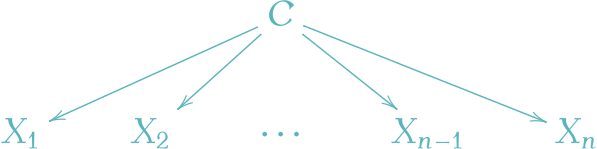
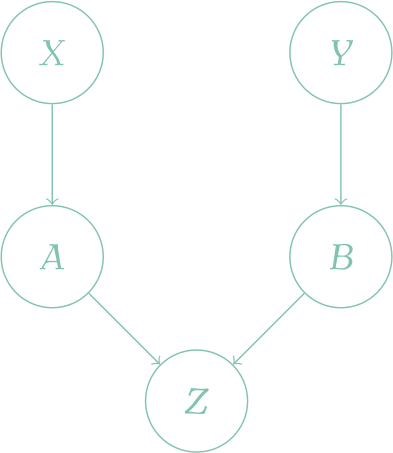

A Blog Entry on Bayesian Computation by an Applied Mathematician
$$
$$
1 歴史と導入
1.1 例
また，ベイジアンネットワークは，Markov 圏 上の図式のうち，特定のグラフ理論的な条件 2.2 を満たすものと見れる．
ファクターグラフは，マルコフネットワークと，その上に局所的に定義されたポテンシャルに関する情報との組である．
以上，グラフを利用したモデリング法は全て，確率的グラフィカルモデルとも呼ばれる．
1.2 はじめに
モデルに変数が多く含まれるほど，モデリングの作業は難しくなっていく．
その中でも，最も基本的な事前知識は「どの変数の間に関係があり，どの変数は互いに独立か」というタイプのものであり，変数間のグラフを描くことで特にわかりやすくなる．
グラフィカルモデル とは，このような変数間の依存性・独立性を表現したグラフに，特定の分布族を対応させる数学的枠組みである．4
1.3 諸科学での知識表現の歴史
多くの科学分野において，「知識表現」の「知識」とは，特に因果関係に関する知識のことを指すようである．これを捉えるために，グラフを用いることは自然な発想であり，計算機の登場以前にも，純粋に人間が理解を深めるための用途に，歴史上極めて早い時期から用いられていた．
1.4 人工知能分野での確率的モデリングの採用
人工知能分野が確率的手法を採用したのは，エキスパートシステムの構築が志向された 1960 年代であった．8
医療診断や油源探索における専門家に匹敵する判断力を持つアルゴリズムを構築する途上で，不確実性の度合いの定量化が必要となり，naive Bayes model （第 2.1 節）と呼ばれる確率的モデルが採用された．特に (de Dombal et al., 1972) は限られた分野であるが人間を凌駕する診断正答率を示した．
だがこの確率的アプローチは，主にその計算複雑性から 1970 年代では冬の時代を経験することとなり，エキスパートシステムも production rule framework や ファジー論理 (Zadeh, 1989) など，確率論に代わって他のアーキテクチャが試みられるようになっていった．
1.5 Bayesian Network と確率的モデリングの登場
これを打開したのが
の２つである．
これにより，確率的グラフィカルモデル，また一般に確率的アプローチが広く受け入れられるようになった．
1.6 Markov Network の登場と MCMC の普及
MCMC が真に統計界隈に輸入されるきっかけとなった (Gelfand and Smith, 1990) は Gibbs サンプラーに関するものであった．(Geman and Geman, 1984) による Gibbs サンプラーの提案も，画像分析，広く空間統計学においてなされたものであった．
統計物理学における Ising モデルが，空間統計学において Markov random field として広く受け入れられ (Besag, 1974)，これにより統計界隈に階層モデルと Gibbs サンプラーが広く受け入れられるようになったのである．
特に，Markov random field が，Gibbs 分布の局所的な条件付き分布からの特徴付けを与える（Hammersley-Clifford の定理3.5）という認識を導き，このことが MCMC を一般の Bayes 計算手法たらしめたと強調している (Besag and Green, 1993)．12
it is no coincidence that the original concept and the early development of MCMC in Bayesian inference should take place exclusivelyin the spatial statistics literature. (Besag and Green, 1993, p. 26)
2 Bayesian Network
2.1 例：ナイーブ Bayes モデル
naive Bayes model は Idiot Bayes model とも呼ばれる Bayesian Network の簡単な例である．
これは クラス と呼ばれる離散潜在変数 \(C\in\{c^1,\cdots,c^k\}\) を持つ次のようなモデルである．

この際，グラフィカルモデルに共通する用語を確認する．
- クラスの実現値 \(c^i\) を インスタンス と呼ぶ．
- 潜在変数の実現値が確定することを，観測 の他に インスタンス化 ともいう．
- インスタンス化されたときに取る値は エビデンス とも呼ばれる．
観測値 \(X_1,\cdots,X_n\) は 特徴 (features) と呼ばれ，これは互いに辺で結ばれていないため，クラスを与えた下で互いに条件付き独立であるとする： \[ (X_i\perp\!\!\!\perp\boldsymbol{X}_{-i}\mid C)\;(i\in[n]), \] \[ \boldsymbol{X}_{-i}:=(X_{1:i-1},X_{i+1:n}). \]
こうして得る階層モデルを naive Bayes model という．13 その結合密度は \[ p(c,x_1,\cdots,x_n)=p(c)\prod_{i=1}^np(x_i|c) \] と表せる．
2.2 DAG
Bayesian network は belief network とも呼ばれる．15 決定分析で用いられる influence diagram / decision network はその一般化である．
2.3 DAG が表現する局所独立構造
Bayesian Network が視覚的表現・記号論で，その表現する所の局所依存性が意味論であると言える．
2.4 Bayesian Network の特徴付け
2.5 ３節グラフの分離性
節が３つ \(X,Y,Z\) の場合の DAG は大別して３通り存在する．この場合で「分離性」の概念を説明する．
３つの成分 \((X,Y,Z)\) が依存関係にある状態で，\(Z\) が観測された（インスタンス化された）とする．
その場合に，\(X,Y\) 間の因果関係がどう変化するか？を考える．元々因果関係があったところから，21 これが解消されるとき，\(X,Y\) は \(Z\) を介して \(d\)-分離 であるという．22
2.6 一般の DAG の分離性
局所依存性（ Section 2.2 ）は \(d\)-分離性の特別な場合であり，\(\mathcal{I}_l(\mathcal{G})\subset\mathcal{I}(\mathcal{G})\) である．
2.7 例

この Bayesian Network 構造は，いつ \(d\)-分離になり，いつ \(d\)-分離ではないか？
2.8 分離性の特徴付け
\(\mathcal{G}\) が定める分布族について，殆ど全ての分布が共通して持つ条件付き独立性の構造を，\(\mathcal{G}\) から読み取れる \(d\)-分離性によって発見できるということになる．
さらには，分布 \(P\) の独立性の情報を知りたい場合，この背後にあるグラフ \(\mathcal{G}\) を探し出して，\(d\)-分離性を調べれば良い，ということでもであるのである．27
2.9 \(I\)-同値性
\(I\) は写像であるから，この関係は確かに Bayesian Network 構造の全体（果てには有向グラフの全体）に同値関係を定める．
有向グラフ \(\mathcal{G}=(\mathcal{X},\mathcal{E})\) の辺 \((X,Y)\in\mathcal{E}\) が 被覆されている とは， \[ \pi(Y)=\pi(X)\cup\{X\} \] を満たすことをいう．
合流結合 \(X\rightarrow Z\leftarrow Y\) において，辺 \(X\to Z\) は被覆されていない．
3 Markov Network
3.1 グラフ理論の準備
\(A\) を集合とする． \[ [A]^k:=\left\{B\in P(A)\mid\# B=k\right\} \] とする．無向グラフとは集合 \(V\) と \(E\subset[V]^2\) の組 \(G:=(V,E)\) のことをいう．32
Markov Network 構造 とは，任意の無向グラフをいう．
２つの節 \(x,y\in V\) が 隣接する (adjacent / neighbours) とは，\(\{x,y\}\in E\) が成り立つことをいう．
無向グラフ \(G\) が 完備 (complete) であるとは，任意の \(x,y\in V\) について \(\{x,y\}\in E\) が成り立つことをいう．このとき，頂点集合 \(V\) は クリーク (clique) であるという．位数 \(n\) の完備グラフは \(K^n\) で表される．33
\(K^r\subset G\) を満たす最大の数 \[ \omega(G):=\left\{r\in\mathbb{N}\mid K^r\subset G\right\} \] を クリーク数 といい，グラフの不変量となる．34
弦グラフ (chordal / triangulated graph) とは，任意の長さ４以上のサイクルが弦を持つグラフを言う．35 弦グラフが，Bayesian Network と Markov Network の双方により表現可能であるグラフのクラスに一致する．
3.2 Markov Network と Markov Random Field
マルコフネットワークは，２次元のマルコフ確率場に等価である．36
3.3 はじめに
Markov Network は相互作用に自然な双方向性がない場合でもモデリングを可能とする．
例えば，集合 \(\{A,B,C,D\}\) 上の条件付き独立関係 \[ \mathcal{I}:=\left\{\substack{A\perp\!\!\!\perp C|(B,D),\\B\perp\!\!\!\perp D|(A,C)}\right\} \] に関して，\(\mathcal{I}(\mathcal{G})=\mathcal{I}\) を満たす Bayesian Network 構造 \(\mathcal{G}\) は存在しない．
一方で，分岐結合と合流結合とを区別できないため，因果性のような方向を持った依存関係は表現できない．
Markov Network では，節の間に自然な順序構造がないため，分布の表示が難しくなり，より純粋にグラフの分解に頼ることになる．それゆえ，データからの構造学習も遥かに難しくなる．38
Bayesian Network では条件付き確率密度のみで十分だったところを，これを一般化する概念である factor と呼ばれる概念によって達成する．
条件付き確率密度 \(p(x_1,\cdots,x_m|y_1,\cdots,y_k)\) とは，形式的には，積空間 \(\prod_{i=1}^m\mathrm{Im}\,(X_i)\times\prod_{j=1}^k\mathrm{Im}\,(Y_j)\) 上の（正規化された）関数である．一般に，確率変数の値域の積上の（正規化されているとは限らない）関数を ファクター と言う．
3.4 ファクター
確率変数の組 \(\boldsymbol{X}=(X_1,\cdots,X_n)\) 上の ファクター とは，ある部分集合 \(\{n_1,\cdots,n_D\}\subset[n]\) に対して，関数 \((X_{n_1},\cdots,X_{n_D})\) の値域上に定義された関数 \[ \phi:\prod_{i=1}^D\mathrm{Im}\,(X_{n_i})\to\mathbb{R} \] を言う．この定義域を スコープ と言う．39
定義域 \(a,b\subset[n]\) がかぶる２つのファクター \(\phi_1,\phi_2,a\cap b\ne\emptyset\) が存在する場合，これらを接続して，\(\prod_{i\in a\cup b}\mathrm{Im}\,(X_i)\) 上に定義された新たなファクターを作ることが出来る：40 \[ \phi_1\times\phi_2(X_{a\cup b}):=\phi_1(X_a)\phi_2(X_b). \]
3.5 Markov Network の分離性
(Besag, 1974) はこの定理に別証明を付し，植物生態学における空間統計モデルに応用している．45
Markov 確率場の結合分布を，条件付き分布の系から得ることは困難であるが，結局結合分布も Gibbs 分布になることが (Hammersley and Clifford, 1971) の定理からわかるので，Gibbs 分布を通じて計算することができる．
この「条件付き分布から結合分布が復元できる」という知見が Gibbs sampling の基礎となった．46 また統計的画像解析の基礎ともなった (Grenander, 1983)．
また (Geman and Geman, 1984) は，Markov 確率場でモデリングをし，その最大事後確率 MAP (Maximum a Posteriori) を目的関数として最適化を行う，という MAP-MRF アプローチを創始した (Stan Z. Li, 2009, p. 2)．
さらに統計計算法の進展により，画像の低レイヤーな特徴を表現する（画像修復，物体発見など）だけでなく，高レイヤーな特徴（物体認識やマッチングなど）をも扱えることがわかっている (Gidas, 1989), (S. Ziqing Li, 1991)．
Beysian Network （ Section 2.8 ）の場合と違い，1. の主張が，\(\mathcal{H}\) に沿って分解する全ての分布 \(P\in\mathcal{P}(\mathcal{X})\) に関して成り立つとは限らない．
しかし，殆ど全ての \(\mathcal{H}\) に沿って分解する分布 \(P\in\mathcal{P}(\mathcal{X})\) に関して成り立つ条件付き独立性は，グラフの構造から読み取れる．
3.6 局所依存性
Bayesian Network の \(d\)-分離性に対応する分離性の概念を導入し，大域的独立性の概念を定義した．
しかし，Bayesian Network の場合では有向グラフとしての構造からすぐに読み取れた局所依存性の概念は，Markov Network の場合では，グラフの構造からは読み取れない．
そして２通りの定義が考え得る．局所依存性は，大域的依存性のサブセットであることに注意．そして，台を全体 \(\mathcal{X}\) に持つ分布については，大域的依存性も含めて３つの定義は全て同値である．48
4 Factor Graph
Markov network は Gibbs 分布の依存性を十分に表現できているわけではなかった（第 3.5 節）．これは特に，クリーク間の大小関係を把握できていないことに因る．
4.1 定義
5 終わりに
MCMC，特に Gibbs サンプラーは，Markov network の形で与えられる局所的な情報を利用したダイナミクスを持つ．
それ故，デザインから，大域的な探索が不得手であると言える．
References
Balgi, S., Daoud, A., Peña, J. M., Wodtke, G. T., and Zhou, J. (2024). Deep learning with DAGs.
Bartlett, M. S. (1935). Contingency table interactions. Supplement to the Journal of the Royal Statistical Society, 2(2), 246–252.
Besag, J. (1974). Spatial interaction and the statistical analysis of lattice systems. Journal of the Royal Statistical Society. Series B (Methodological), 36(2), 192–236.
Besag, J., and Green, P. J. (1993). Spatial statistics and bayesian computation. Journal of the Royal Statistical Society: Series B (Methodological), 55(1), 25–37.
Bishop, C. M. (2006). Pattern recognition and machine learning. Springer New York.
Blalock Jr., H. (1971). Causal models in the social sciences. Chicago, Illinois: Aldine-Atheson.
Clark, M. (2018). Graphical & latent variable modeling.
de Dombal, F. T., Leaper, D. J., Staniland, J. R., McCann, A. P., and Horrocks, J. C. (1972). Computer-aided diagnosis of acute abdominal pain. The Britich Medical Journal, 2(5804), 9–13.
Diestel, R. (2017). Graph theory,Vol. 173. Springer Berlin Heidelberg.
Gelfand, A. E., and Smith, A. F. M. (1990). Sampling-based approaches to calculating marginal densities. Journal of the American Statistical Association, 85(410), 398–409.
Geman, S., and Geman, D. (1984). Stochastic Relaxation, Gibbs Distributions, and the Bayesian Restoration of Images. IEEE Transactions on Pattern Analysis and Machine Intelligence, PAMI-6(6), 721–741.
Gibbs, J. W. (1902). Elementary principles in statistical mechanics: Developed with especial reference to the rational foundation of thermodynamics. Charles Scribner’s Sons.
Gidas, B. (1989). A renormalization group approach to image processing problems. IEEE Transactions on Pattern Analysis and Machine Intelligence, 11(2), 164–180.
Grenander, U. (1983). Tutorial in pattern theory. Brown University.
Hammersley, J., and Clifford, P. (1971). Markov fields on finite graphs and lattices.
Heckerman, D. E., Horvitz, E. J., and Nathwani, B. N. (1992). Toward normative expert systems: Part i. The pathfinder project. Methods of Information in Medicine, 31(2), 90–105.
Heckerman, D. E., and Nathwani, B. N. (1992). Toward normative expert systems. II. Probability-based representations for efficient knowledge acquisition and inference. Methods of Information in Medicine, 31(2), 106–116.
Howard, R. A., and Matheson, J. E. (1981). Readings on the principles and applications of decision analysis. In R. A. Howard and J. E. Matheson, editors,. Strategic Decision Group.
Howard, Ronald A., and Matheson, J. E. (1984). In, pages 721–762. SDG Decision Systems.
Jordan, M. I., Ghahramani, Z., Jaakkola, T. S., and Saul, L. K. (1999). An introduction to variational methods for graphical models. Machine Learning, 37, 183–233.
Jöreskog, Karl Gustav. (1970). A general method for analysis of covariance structures. Biometrika, 57(2), 239–251.
Jöreskog, K. G., and Wold, H. (1982). Systems under indirect observation: Causality, structure, prediction. Elsevier, Amsterdam.
Kindermann, R., and Snell, J. L. (1980). Markov random fields and their applications. American Mathematical Society.
Koller, D., and Friedman, N. (2009). Probabilistic graphical models. MIT Press.
Lauritzen, S. L., and Spiegelhalter, D. J. (1988). Local computations with probabilites on graphical structures and their application to expert systems. Journal of the Royal Statistical Society. Series B (Methodological), 50(2), 157–224.
Li, S. Ziqing. (1991). Towards 3D vision from range images: An optimisation framework and parallel distributed networks (PhD thesis). University of Surrey, Guildford Surrey, UK. Retrieved from https://www.sciencedirect.com/science/article/pii/104996609290023V
Li, Stan Z. (2009). Markov random field modeling in image analysis. Springer London.
Mézard, M., and Montanari, A. (2009). Information, physics, and computation. Oxford University Press.
Murphy, K. P. (2023). Probabilistic machine learning: Advanced topics. MIT Press.
Pearl, J. (1988). Probabilistic reasoning in intelligent systems. Morgan Kaufmann.
Pearl, J. (2009). Causality: Models, reasoning and inference. 和訳は黒木学による『統計的因果推論―モデル・推論・推測』（共立出版，2009）; Cambridge University Press.
Pearl, J., Glymour, M., and Jewell, N. P. (2016). Causal inference in statistics: A primer. 和訳は落海浩による『入門 統計的因果推論』（朝倉書店，2019）; Wiley.
Robert, C. P. (2007). The bayesian choice: From decision-theoretic foundations to computational implementation. Springer New York.
Robert, C., and Casella, G. (2011). A short history of markov chain monte carlo: Subjective recollections from incomplete data. Statistical Science, 26(1), 102–115.
Rumelhart, D. E., Hinton, G. E., and Williams, R. J. (1987). Parallel distributed processing: Explorations in the microstructure of cognition: foundations. In D. E. Rumelhart and J. L. McClelland, editors, pages 318–362. MIT Press.
Schölkopf, B. (2022). Causality for machine learning. In Probabilistic and causal inference, pages 765–804. ACM.
Sucar, L. E. (2021). Probabilistic graphical models: Principles and applications. Springer London.
Taroni, F., Biedermann, A., Bozza, S., Garbolino, P., and Aitken, C. (2014). Bayesian networks for probabilistic inference and decision analysis in forensic science. John Wiley & Sons.
Theodoridis, S. (2020). Machine learning: A bayesian and optimization perspective. Academic Press.
Wainwright, M. J., and Jordan, M. I. (2008). Graphical models, exponential families, and variational inference. Foundations and Trends in Machine Learning, 1(1-2), 1–305.
Wold, Herman. (1954). Causality and econometrics. Econometrica, 22, 162–177.
Wold, H., and Strotz, R. H. (1960). Recursive vs. Nonrecursive systems: An attempt at synthesis (part i of a triptych on causal chain systems). Econometrica, 28(2), 417–427.
Wright, S. (1918). On the nature of size factors. Genetics, 3(4), 367.
Zadeh, L. A. (1989). Knowledge representation in fuzzy logic. IEEE Transactions on Knowledge and Data Engineering, 1(1), 89–100.
須山敦志. (2019). ベイズ深層学習. 講談社サイエンティフィク.
黒木学, and 小林史明. (2012). 構造的因果モデルについて. 計量生物学, 32(2), 119–144.
Footnotes
(Taroni et al., 2014, p. 35)，(Sucar, 2021, p. x), (Clark, 2018) Graphical Models．(Jordan et al., 1999, p. 191) は 3.2節で Neural Networks as Graphical Models を扱っている．↩︎
この文脈では，ベイジアンネットワークのことは DAG とも，汎函数因果モデル (Schölkopf, 2022) とも呼ぶ．(Murphy, 2023, p. 211) 4.7節．例えば，医療診断では，複数の症状や検査結果，医学的指標との関連・相関・因果に関する知識を Bayesian Network （Section 2） で表現する．↩︎
(Mézard and Montanari, 2009, p. 177) 9.1.2 節に，ファクターグラフの例が挙げられている．↩︎
(Koller and Friedman, 2009, p. 3) 1.2.1，(Murphy, 2023, p. 143) 第4章．(Balgi et al., 2024) “As non-parametric causal models, DAGs require no assumptions about the functional form of the hypothesized relationships.”↩︎
(Koller and Friedman, 2009, pp. 12–14) 1.4節 など．↩︎
一般に，SEM は (Karl Gustav Jöreskog, 1970) が発祥と見られており，潜在変数モデルにもパス解析を拡張したもの，と説明される (Clark, 2018)．↩︎
(黒木学 and 小林史明, 2012) など．↩︎
(Koller and Friedman, 2009, p. 1) 1.1 Motivation．これはこの分野が不確実性を定量的に扱う必要があり，それ故確率的モデリングを必要としたためである．一般に，特定のタスクに特化しながら，汎用性も持つエキスパートシステムを構築するためには，宣言型の知識表現 が良い接近として用いられる (Koller and Friedman, 2009, p. 1) 1.1 Motivation．declarative representation の他に model-based approach ともいう．これは対象となるシステムの構造に関する知識を，計算機が理解可能な形で表現するモデルベースな接近であり，「知識」と「推論」という異なるタスクを分離する点に妙がある．↩︎
(Koller and Friedman, 2009, p. 2) 1.1 Motivation．Probabilistic models allow us to make this fact (= many systems cannot be specified deterministically.) explicit, and therefore often provide a model which is more faithful to reality.↩︎
(Theodoridis, 2020, p. 772) なども参照．用いるアルゴリズムの計算複雑性も，グラフ理論の言葉で記述できることが多い (Wainwright and Jordan, 2008, p. 4)．↩︎
その最重要文献として，(Grenander, 1983)，特に画像分析への Bayesian アプローチを取り扱った 4-6 章を挙げている．Gibbs サンプラーの語を導入したのは (Geman and Geman, 1984) であるが，すでに (Grenander, 1983) において極めて重要な Bayes 計算手法として扱われていた．↩︎
(Bishop, 2006, p. 46) などでも紹介されている．↩︎
(Koller and Friedman, 2009, p. 57)，(Mézard and Montanari, 2009, p. 269)．↩︎
(須山敦志, 2019, p. 4), (Stan Z. Li, 2009, p. 48)．Wikipedia も参照．↩︎
(Koller and Friedman, 2009, p. 62) 定理3.1，定理3.2 p.63．(Ronald A. Howard and Matheson, 1984) による．↩︎
これを trail が active である，ともいう．(Koller and Friedman, 2009, p. 71)．↩︎
この語は directed separation の略であり (Koller and Friedman, 2009, p. 71)，和語では 有向分離 ともいう．↩︎
(Koller and Friedman, 2009, pp. 71–72) 定義3.6, 3.7．↩︎
\(I(\boldsymbol{X},\boldsymbol{Y}|\boldsymbol{Z})_\mathcal{G}\) と表すこともある．↩︎
(Koller and Friedman, 2009, pp. 72–73) 定理3.3, 3.5．↩︎
(Koller and Friedman, 2009, p. 78) 3.4節 の内容．↩︎
(Koller and Friedman, 2009, p. 76) 定義3.9．↩︎
(Koller and Friedman, 2009, p. 77) 定理3.7．↩︎
有向グラフの スケルトン とは，同じ辺を持つ無向グラフのことである．↩︎
(Koller and Friedman, 2009, p. 77) 定理3.8．↩︎
(Diestel, 2017, pp. 1–2) 参照．↩︎
(Diestel, 2017, p. 3) 参照．↩︎
(Diestel, 2017, p. 135) 参照．↩︎
すなわち，三角形以外の 誘導部分グラフ を部分グラフに持たないグラフをいう．(Diestel, 2017, p. 135) 参照．↩︎
(Sucar, 2021, p. 94) も参照．(Stan Z. Li, 2009, p. 47) は，pairwise なマルコフ確率場もマルコフネットワークと見れることを指摘している．pairwise とは非零なポテンシャルを持つクリークが二点集合になるマルコフ確率場をいう．↩︎
(Koller and Friedman, 2009, p. 104) 定義4.1．↩︎
ただし，\(\phi_1(X_a)\) とは \(\phi_1((X_i)_{i\in a})\) の略とした．↩︎
(Koller and Friedman, 2009, p. 108) 定義4.3．↩︎
(Koller and Friedman, 2009, p. 105) によると，当初統計物理学の分野の Markov 確率場の概念でこの用語が用いられたことが始まりとなっている．↩︎
(Koller and Friedman, 2009, pp. 114–115) 定義4.8, 9．↩︎
(Koller and Friedman, 2009, pp. 116–117) 定理4.1，定理4.2．↩︎
(Stan Z. Li, 2009) の Rama Chellappa による foreword に “A big impetus to theoretical and practical considerations of 2D spatial interaction models, of which MRF’s form a subclass, was given by the seminal works of Julian Besag.” とある．“Labeling is also a natural representation for the study of MRF’s (Besag 1974).” は (Stan Z. Li, 2009, p. 3)．↩︎
(C. Robert and Casella, 2011) (Stan Z. Li, 2009, p. 1) も参照．↩︎
(Koller and Friedman, 2009, p. 117) 定理4.3．↩︎
これは台が縮退している場合は，自明な（決定論的な）独立性が生じてしまうためである．↩︎
(Koller and Friedman, 2009, p. 123) 4.4.1.1，(Mézard and Montanari, 2009, p. 175) 9.1.1 節．↩︎